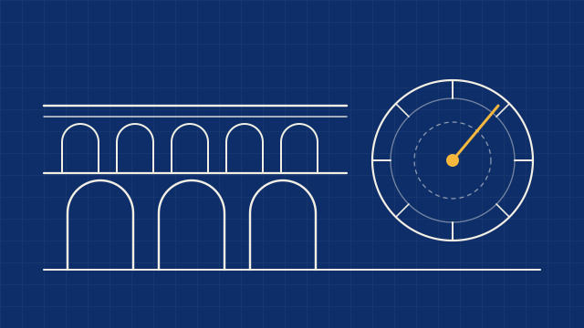

“The fever isn't bad air — tiny invisible creatures in the water cause it. Boil it first.”
“Invisible creatures? Show me one. Otherwise you're asking a whole quarter to burn firewood for nothing.”
No levels. No XP. Help solve people's problems with knowledge of the future — from science and medicine to agriculture and law.
Easy · Medium · Hard
From gentle hints to fierce skepticism and a real language barrier.
Real knowledge
Immerse yourself in the past and test how well you know how the world works.
Voice & any language
Short spoken turns for walking or driving, in whatever language you start.
Where & when
Five fact-checked eras — or anywhere in history.
Florence 1490
High Renaissance workshops, Medici court, lenses, and printing.
More info →Florence 1347
Months before the Black Death, with no printing press.
More info →
Vienna 1683
Three weeks before the Ottoman siege. Dysentery and early science.
More info →
Rome 46 BC
Caesar's 445-day year. Aqueducts exist; zero and paper do not.
More info →
Baghdad 830
The House of Wisdom — paper, algebra, hospitals, ahead of Europe.
More info →
Any place, any year
Name any city and century. 510 technologies across 12 world regions.
More info →Other ideas to try: Berlin 1750· Kyoto 1600· Babylon 590 BC· Tenochtitlan 1450· Alexandria 250 BC· Bell Labs 1947
FAQ
What is Blueprints from Tomorrow?
Blueprints from Tomorrow is a free, non-profit, open-source historical time-travel role-playing game. You travel into the past as yourself — unprepared, with whatever is in your pockets — and try to explain science, hygiene, engineering, or institutions well enough that historical craftsmen, scholars, and rulers can actually build or adopt them.
How do I play Blueprints from Tomorrow?
You do not need an app or account. Tell ChatGPT, Claude, Gemini, or any voice agent: "Start a game of blueprintsfromtomorrow.com" (or point it to https://blueprintsfromtomorrow.com/llms.txt). The AI loads the rules, asks only where/when and your difficulty, and begins.
Do I need to install software or run Python scripts to play?
No. Every rule file, campaign, era guide, and all 510 compact per-technology reference files are pre-built and served as plain static Markdown. The Python scripts in the repository are only for contributors updating the tech tree or generating visual progress charts from a finished save file.
Which historical campaigns and eras are included?
Five fact-checked campaigns are included: Florence 1490 (High Renaissance), Florence 1347 – Before the Plague (eve of the Black Death), Vienna 1683 – The Siege (Ottoman siege), Rome 46 BC – The Longest Year (Caesar's calendar reform), and Baghdad 830 – The House of Wisdom (Abbasid Caliphate under al-Ma'mun). You can also choose any custom place and year.
What happens if I explain a technology incorrectly?
Historical craftsmen build literally what you explain, mistakes and gaps included. If you omit a safety valve or mix the wrong proportions, the invention fails or backfires realistically. The game master does not correct you during play; mistakes are logged secretly in ROT13 inside your save file and explained with real literature sources in the final evaluation.
Can I play in German or other languages, or by voice?
Yes. Although the game-master rules are written in English, the AI automatically plays in whatever language you use to start the game. An optional Voice Mode module adapts responses to short spoken turns without markdown for hands-free play while walking or driving.